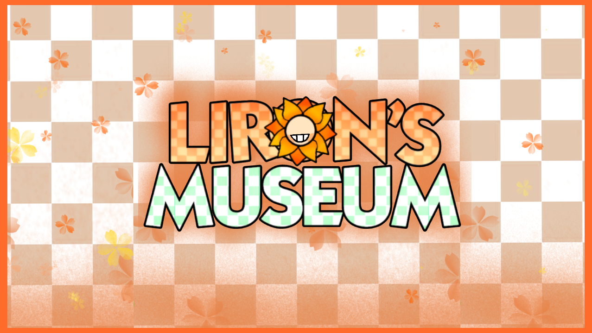

Uma AU ambientada no universo de Dandy
O Museu de Liron, oficialmente LIFEMUSEUM, foi criado após o fracasso do Show do Liron.
Os fundadores desapareceram. Os Toon Handlers foram demitidos. E os toons ficaram presos.
Eles não conseguem sair. Eles não conseguem pedir ajuda. E o museu continua funcionando… sozinho.
Projeto em desenvolvimento ativo, com foco em narrativa ambiental e eventos sazonais.